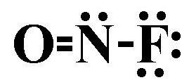
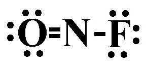
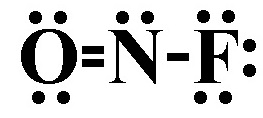
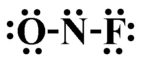

1) The statement "samples of a compound will always contain the same proportion of elements by mass" belongs to:
A) The Law of Definite Proportions*
B) The Law of Conservation of Mass
C) The Law of Multiple Proportions
D) Dalton's Atomic Theory
Dalton's Atomic Theory: Matter is composed of small indestructible particles.
The Law of Conservation of Mass: In a chemical reaction, matter is neither created nor destroyed.
The Law of Multiple Proportions: If two elements form more than one compound, the ratios of the masses of the second element that combine with a fixed mass of the first element will always be ratios of small whole numbers.
The Law of Definite Proportions: Samples of a compound will always contain the same proportion of elements by mass.
2) What is the name of the acid H3PO4?
A) Hydrophosphoric acid
B) Phosphorous acid
C) Hydrophosphorous acid
D) Phosphoric acid*
3) Which of the following would have the lowest lattice energy?
A) Na2O*
B) CaO
C) MgO
D) Al2O3
There are two parts that are involved in lattice energy. One is the charge on the ions (this is the bigger priority), and the other is the distance between the ions. This is only testing on knowing that the larger the charge on the ions, the larger the lattice energy. Since Na has the lowest charge, Na2O will have the lowest lattice energy.
4) Determine the name for NaC2H3O2·3H2O
A) Sodium acetate tetrahydrate
B) Sodium acetate trihydrate*
C) Sodium (I) acetate trihydrate
D) Sodium acetate dihydrogen monoxide
NaC2H3O2·3H2O is an ionic compound and a hydrate. To name the ionic compound portion give the name of the cation followed by the name of the anion. In this case that would be sodium acetate. The hydrate portion of the formula is named based on the number of water molecules. Since this hydrate has 3 water molecules in its formula the prefix 'tri-' is used before the word 'hydrate'. Thus the correct name is sodium acetate trihydrate.
5) Give the name for CrO3.
A) Chromium trioxide
B) Chromium (IV) oxide
C) Chromium (VI) oxide*
D) Chromium oxide
Since Cr is a metal and O is a nonmetal, this is an ionic compound. Since Cr is a variable charge metal we need to calculate the charge on Cr and put a roman numeral in the name indicating the charge. three O will carry a total negative charge of -6, which is 3 x -2. Therefore, the total positive charge must be +6, and that positive charge is carried by one CrO. This means that each Cr must carry a +6 charge. The roman numeral is placed after the name of the metal, and the anion receives an -ide ending, so the correct name is Chromium (VI) oxide.
6) Give the name for Cl2O7.
A) Dichlorine heptoxide*
B) Chlorine (II) oxide
C) Chlorine heptoxide
D) Chlorine oxide
Both Cl and O are nonmetals, so we will need to put a Greek prefix before the name of each element, then give the second element an -ide ending. However, mono- is dropped from the beginning in cases where there is only 1 of the first element in the compound. Since there are 2 Cl and 7 O, the name is Dichlorine heptoxide.
7) What is the formula for the compound potassium dichromate?
A) K2Cr2O7*
B) KCr2O7
C) K2CrO4
D) KCr2
Potassium is a fixed charge metal and dichromate is a polyatomic ion. Since potassium dichromate contains a polyatomic ion, it is an ionic compound. Therefore, to get the formula you must balance the charges of the two ions. Potassium will carry a +1, whereas dichromate will carry a -2 charge. The lowest common multiple of 1 and 2 is 2, therefore there will need to be 2 potassium ions and 1 dichromate ions. That gives us a formula of: K2Cr2O7.
8) What is the empirical formula for a sulfur oxide (compound composed of sulfur and oxygen) that is 50.0% sulfur by mass?
A) SO2*
B) S3O
C) S2O
D) SO3
Since the sulfur oxide compound is is 50.0% sulfur by mass, it will be 100% - 50.0% = 50.0 % oxygen by mass.
Assuming a 100 g sample gives us: 50.0 g sulfur and 50.0 g oxygen.
Next convert those grams to moles. 50.0 g S x \( \frac{1 mol S}{32.06 g S} \) = 1.56 mol S 50.0 g O x \( \frac{1 mol O}{16.00 g O} \) = 3.13 mol O
Then divide by the lower of the two mol amounts, and get the lowest whole number ratio.
9) What is the name of the compound with the formula BaO?
A) Barium monoxide
B) Barium oxide*
C) Barium (II) oxide
D) Barium (I) oxide
Since Ba is a fixed charge metal and O is a nonmetal, this is an ionic compound, and to name it we just need to write the name of the metal followed by the name of the nonmetal with an -ide ending. Thus the name of BaO is Barium oxide.
10) What is the name of the following polyatomic ion? PO43-
A) phosphite
B) phosphoxide
C) phosphide
D) phosphate*
11) Calculate the molar mass for Sn(ClO3)4.
A) 808.6 g/mol
B) 202.2 g/mol
C) 324.5 g/mol
D) 452.5 g/mol*
To calculate the molar mass for Sn(ClO3)4, take the number of each element from the periodic table and multiply it by the molar mass of the element, then sum all the molar masses from each element. Sn: 118.71 g/mol x 1 = 118.71 g/mol Cl: 35.45 g/mol x 4 = 141.8 g/mol O: 16.00 g/mol x 10 = 200 g/mol Total: 452.5 g/mol
12) An ionic bond is best described as
A) A bond formed when electrons are transferred from one atom to another*
B) A bond between two metals
C) A bond between two non-metals
D) A bond formed when electrons are shared between two atoms
A covalent bond is formed when two atoms share electrons in order to achieve a stable electron configuration. In a covalent bond, the atoms involved have similar electronegativity, meaning they have similar tendencies to attract electrons. This sharing of electrons allows both atoms to fill their outermost energy levels and achieve greater stability.
An ionic bond is formed when electrons are transferred from one atom to another, resulting in the formation of ions. In an ionic bond, one atom donates electrons to another atom, resulting in the formation of a positively charged ion (cation) and a negatively charged ion (anion). The attraction between these opposite charges holds the ions together and forms an ionic bond.
13) Which of the following is the correct Lewis structure for S ?
A)
B)
C)
D) *
Since S is in the 6A group, it should have 6 valence electrons in its Lewis structure. Thus is the answer.
14) Which of the following is the correct Lewis structure for P-?
A) *
B)
C)
D)
Since P- has a -1 charge, it will have one more electron than the neutral P. P is in the 5A period, so the Lewis structure should have 5 + 1 = 6 electrons. Thus the correct Lewis structure is .
15) What is the empirical formula for Hg2(NO3)2?
A) Hg2(NO3)2
B) Hg2NO6
C) HgNO3*
D) Hg(NO)3
An empirical formula represents the simplest ratio of elements present in a compound. It shows the relative number of atoms of each element in a compound without specifying the actual number of atoms. To get the empirical formula you need to divide the subscripts in the equation (Hg2(NO3)2) by their greatest common divisor. In this case 2 and 2‚ 6‚ 12 and 6 are divisible by 2, which gives HgNO3 as the empirical formula.
16) Calculate the molecular mass for C9H18O.
A) 142.2 amu*
B) 29.02 amu
C) 126.2 amu
D) 125.1 amu
To calculate the molecular mass for C9H20O, take the number of each element from the periodic table and multiply it by the molecular mass of the element, then sum all the molecular masses from each element. C: 12.01 amu x 9 = 108.1 amu H: 1.008 amu x 20 = 18.14 amu O: 16.00 amu x 1 = 16.00 amu Total: 142.2 amu
17) What is the name of the following polyatomic ion? OH-
A) hydroxide*
B) oxygen hydride
C) oxyhydrate
D) peroxyhydrate
18) What is the name of the ClO3- ion?
A) perchlorate
B) chlorite
C) chlorate*
D) hypochlorite
19) What is the name of the following polyatomic ion? HSO4-
A) hydrogen sulfate (bisulfate)*
B) sulfate
C) sulfite
D) hydrogen sulfite
20) Which of the following shows the best Lewis structure for OCl2?
A)
B)
C)
D) *
Oxygen has 6 valence electrons and chlorine has 7 valence electrons. Both oxygen and chlorine must have an octet. is the only structure with the correct number of electrons (6 + 7 + 7 = 20), where both oxygen and chlorine have an octet.
21) Which of the following shows the best Lewis structure for N2H2?
A)
B)
C) *
D)
22) Which of the following shows the best Lewis structure for NOF?
A) 
B) 
C) *
D) 
23) Which of the following elements is the most electronegative.
A) Chlorine
B) Iodine
C) Bromine
D) Fluorine*
The trend for electronegativity is that it increases as you go up and to the right on the periodic table. However, noble gasses have an electronegativity of approximately zero, so fluorine has the highest electronegativity. Thus in this case, fluorine is the most electronegative.
24) Which of the following shows the best Lewis structure for BH3?
A) *
B)
C)
D)
25) A single covalent bond contains how many electrons?
A) 3
B) 2*
C) 1
D) 4
A single covalent bond contains 2 shared electrons. A double covalent bond contains 4 shared electrons. A triple covalent bond contains 6 shared electrons.
26) Which of the following shows the best Lewis structure for CH3OH?
A)
B)
C)
D) *
27) Identify the weakest bond.
A) All bonds are the same strength
B) Single covalent bond*
C) Double covalent bond
D) Triple covalent bond
Triple bonds are stronger than double bonds, which are stronger than single bonds.
28) Which compound has the smallest ionic character in the gas phase?
A) CO
B) HCl
C) Cl2*
D) LiF
The compound with the smallest ionic character will be the one with the smallest dipole.
The smallest dipole moment will be between the two elements that have the smallest difference in electronegativity. Generally speaking the elements with the smallest difference in electronegativity will be closest on the periodic table. However, you should remember that hydrogen has an electronegativity that is around that of metalloids. In other words, it is low for a nonmetal.
29) Place the following bonds in order of increasing dipole moment.
Si-P Si-Cl Si-S
A) Si-P < Si-S < Si-Cl*
B) Si-Cl < Si-P < Si-S
C) Si-Cl < Si-S < Si-P
D) Si-P < Si-Cl < Si-S
The bond with the lowest dipole moment will be the between elements closest on the periodic table. Since Si and P are the closest on the periodic table, they will have the lowest dipole moment. Since Si and S are the next closest, they will have the second to lowest dipole moment. Si and Cl are the furthest on the periodic table, so they will have the largest dipole moment.
30) Which of the following shows the best Lewis structure for XeF2?
A)
B) *
C)
D)
Xe has 8 valence electrons and F has 7 valence electrons. Xe (being below the 2nd period) can get more than an octet, but F needs an octet. The formal charges need to be as close to zero as possible. is the only structure with the correct number of electrons (8 + 7 + 7 = 22) where the formal charges on all elements is zero.
31) Which of the following bonds is most polar?
A) H-F*
B) H-I
C) HBr
D) HCl
The most polar bond will be the one with the largest dipole moment.
The largest dipole moment will be between the two elements that have the largest difference in electronegativity. Generally speaking the elements with the largest difference in electronegativity will be furthest on the periodic table. However, you should remember that hydrogen has an electronegativity that is around that of metalloids. In other words, it is low for a nonmetal.
32) Give the molecular shape for BH3
A) Octahedral
B) Tetrahedral
C) Trigonal planar*
D) Trigonal pyramid
Step 1: Draw the Lewis Structure. Step 2: Count the number of electron domains: the number of lone pairs and number of atoms bonded to B. You should get 3 electron domains, of which 0 are lone pairs. 3 electron domains and 0 are lone pairs corresponds to a trigonal planar molecular shape.
33) Use the molecular orbital diagram shown below to determine which of the following are the diamagnetic (there may be more than one answer).
A) F2*
B) F2+
C) NeF
D) FO+
Step 1: Count the number of valence electrons in the molecule. FO+: 12 valence electrons F2+: 13 valence electrons F2: 14 valence electrons NeF: 15 valence electrons Step 2: Fill in the molecular orbital diagram from the bottom up, but make sure to follow Hund's rule (one electron in each orbital in degenerate orbitals before a second with an opposing spin) when filling pi molecular orbitals. Step 3: Determine if there are any unpaired electrons in the molecular orbital diagram. FO+: 12 valence electrons, the last 2 electrons go into pi 2p orbitals, which means there are 2 unpaired electrons = paramagnetic F2+: 13 valence electrons, and odd numbers will always have unpaired electrons = paramagnetic F2: 14 valence electrons, the pi 2p orbitals get filled, leaving no unpaired electrons = diamagnetic NeF: 15 valence electrons, and odd numbers will always have unpaired electrons = paramagnetic
34) Identify the number of electron groups (electron domains) around a molecule with sp hybridization.
A) 4
B) 3
C) 5
D) 2*
# Electron domains
Hybridization
2
sp
3
sp2
4
sp3
5
sp3d
6
sp3d2
35) Give the electron domain geometry for PF5
A) Trigonal planar
B) Trigonal bipyramid*
C) T-shape
D) Octahedral
Step 1: Draw the Lewis Structure. Step 2: Count the number of electron domains: the number of lone pairs and number of atoms bonded to P. You should get 5 electron domains. 5 electron domains corresponds to a trigonal bipyramid electron domain geometry.
36) What is the molecular shape of NHO?
A) Linear
B) Trigonal planar
C) bent*
D) Tetrahedral
Since the Lewis structure of NHO has 3 electron domains, and 1 of them is a lone pair, the molecular shape of NHO is bent.
37) What is the VSEPR shape (electron domain geometry) of PF3?
A) Linear
B) Bent
C) Trigonal planar
D) Tetrahedral*
Since the Lewis structure of PF3 has 4 electron domains, the VSEPR shape (electron domain geometry) of PF3 is tetrahedral.
38) What is the molecular shape of PF5?
A) Octahedral
B) Bent
C) See saw (saw horse)
D) Trigonal bipyramidal*
Since the Lewis structure of PF5 has 5 electron domains, none of which are lone pairs, the molecular shape of PF5 is trigonal bipyramidal.
39) What is the VSEPR shape (electron domain geometry) of PF5?
A) Trigonal bipyramidal*
B) Octahedral
C) Trigonal planar
D) Tetrahedral
Since the Lewis structure of PF5 has 5 electron domains, the VSEPR shape (electron domain geometry) of PF5 is trigonal bipyramidal.
40) Is XeF4 polar or nonpolar?
A) Nonpolar*
B) Polar
Since XeF4 is square planar (which is a symmetrical shape), the electronegativities of the four fluorines balance out and XeF4 is nonpolar.
41) What is the VSEPR shape (electron domain geometry) of CH4?
A) Tetrahedral*
B) Bent
C) Linear
D) Trigonal planar
Since the Lewis structure of CH4 has 4 electron domains, the VSEPR shape (electron domain geometry) of CH4 is tetrahedral.
42) Is BH3 polar or nonpolar?
A) Polar
B) Nonpolar*
Since BH3 is trigonal planar (which is a symmetrical shape), the electronegativities of the three hydrogens balance out and BH3 is nonpolar.
43) What is the molecular shape of XeF4?
A) Square planar*
B) Square pyramidal
C) Octahedral
D) See saw (saw horse)
Since the Lewis structure of XeF4 has 6 electron domains, 2 of which are lone pairs, the molecular shape of XeF4 is square planar.
44) What is the VSEPR shape (electron domain geometry) of BH3?
A) Trigonal planar*
B) Linear
C) Tetrahedral
D) Bent
The Lewis structure for BH3 has 3 electron domains, so the VSEPR shape (electron domain geometry) of BH3 is trigonal planar.
45) Which of the following compounds is polar?
A) IF5*
B) O2
C) PF5
D) SiS2
IF5 is square planar shaped which is not a symmetrical shape, thus IF5 will be polar.
46) Use the molecular orbital diagram shown below to determine which of the following are the MOST stable.
A) OF2-
B) F22+*
C) NeF+
D) O2-
Step 1: Count the number of valence electrons in the molecule. F22+: 12 valence electrons O2-: 13 valence electrons NeF+: 14 valence electrons OF2-: 15 valence electrons Step 2: Fill in the molecular orbital diagram from the bottom up, but make sure to follow Hund's rule (one electron in each orbital in degenerate orbitals before a second with an opposing spin) when filling pi molecular orbitals. Step 3: Determine the bond order. Since after 10 valence electrons, the rest go into anti-bonding orbitals, the lowest number of electrons will have the highest bond order. Bond order = (electrons in bonding orbitals - electrons in antibonding orbitals)/2 Bond order for F22+: (8-4)/2 = 2 Bond order for O2-: (8-5)/2 = 1.5 Bond order for NeF+: (8-6)/2 = 1 Bond order for OF2-: (8-7)/2 = 0.5 Since F22+ has the highest bond order, it will be the MOST stable.
47) Which orbitals overlap in the carbon-hydrogen bonds in C2H4?
A) sp and s
B) sp3 and s
C) sp2 and s*
D) Two p orbitals
Step 1) Draw the Lewis structure for C2H4. Step 2) Count the number of electron domains on one of the carbons. There are 3 electron domains on each carbon. Step 3) Determine the hybridization of one of the carbons. Since there 3 are electron domains, it is sp2 hybridized. Step 4) Since the hydrogens only have an s orbital, the bond is between a sp2 hybridized orbital and an s orbital, thus (sp2 and s) is the answer.
48) Use the molecular orbital diagram shown below to determine which of the following are the paramagnetic (there may be more than one answer).
A) C22-
B) NC+
C) BC2-*
D) B2-*
Step 1: Count the number of valence electrons in the molecule. B2-: 7 valence electrons NC+: 8 valence electrons BC2-: 9 valence electrons C22-: 10 valence electrons Step 2: Fill in the molecular orbital diagram from the bottom up, but make sure to follow Hund's rule (one electron in each orbital in degenerate orbitals before a second with an opposing spin) when filling pi molecular orbitals. Step 3: Determine if there are any unpaired electrons in the molecular orbital diagram. B2-: 7 valence electrons, and odd numbers will always have unpaired electrons = paramagnetic NC+: 8 valence electrons, the pi 2p orbitals get filled, leaving no unpaired electrons = diamagnetic BC2-: 9 valence electrons, and odd numbers will always have unpaired electrons = paramagnetic C22-: 10 valence electrons, the last 2 electrons go into sigma 2p orbital filling it, which means there are no unpaired electrons = diamagnetic
49) What is the hybridization on the central atom for HSiN?
A) sp*
B) sp2
C) sp3d
D) sp3
Step 1: Draw the Lewis Structure. Step 2: Count the number of electron domains: the number of lone pairs and number of atoms bonded to Si. You should get 2 electron domains. 2 electron domains corresponds to sp hybridization.
# Electron domains
Hybridization
2
sp
3
sp2
4
sp3
5
sp3d
6
sp3d2
50) What is the molecular shape of SiO2?
A) Linear*
B) bent
C) Tetrahedral
D) Trigonal planar
Since the Lewis structure of SiO2 has 2 electron domains, none of which are lone pairs, the molecular shape of SiO2 is linear.
51) Use the molecular orbital diagram shown below to determine which of the following are the MOST stable.
A) N2*
B) BC-
C) BC
D) C2-
Step 1: Count the number of valence electrons in the molecule. BC: 7 valence electrons BC-: 8 valence electrons C2-: 9 valence electrons N2: 10 valence electrons Step 2: Fill in the molecular orbital diagram from the bottom up, but make sure to follow Hund's rule (one electron in each orbital in degenerate orbitals before a second with an opposing spin) when filling pi molecular orbitals. Step 3: Determine the bond order. Since after 4 valence electrons, the rest go into bonding orbitals, the highest number of electrons will have the highest bond order. Bond order = (electrons in bonding orbitals - electrons in antibonding orbitals)/2 Bond order for BC: (5-2)/2 = 1.5 Bond order for BC-: (6-2)/2 = 2 Bond order for C2-: (7-2)/2 = 2.5 Bond order for N2: (8-2)/2 = 3 Since N2 has the highest bond order, it will be the MOST stable.
52) Which of the following compounds is nonpolar?
A) SiF4*
B) CHF3
C) NH3
D) H2O
SiF4 is tetrahedral shaped, which is a symmetrical shape. That means the fluorines electronegativities will balance out and SiF4 will be nonpolar.
53) What is the molecular shape of H2O?
A) Trigonal planar
B) Tetrahedral
C) Bent*
D) Trigonal pyramidal
Since the Lewis structureof H2O has 4 electron domains, 2 of which are lone pairs, the molecular shape of H2O is bent.


 *
*


 *
*

 *
*
 *
*


 *
*
 *
*